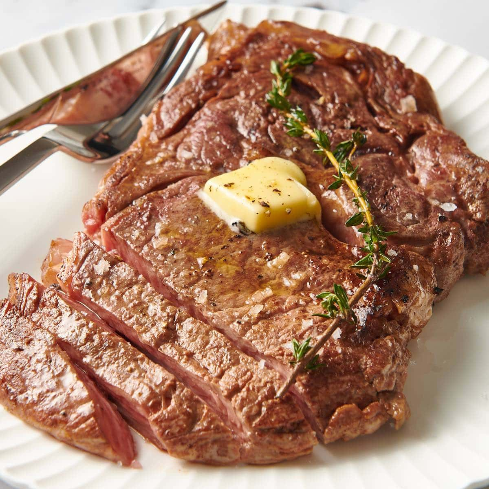

Ribeye Steak

Description
A great choice for meatlovers like myself.
Relatively simple to make, but still takes practice to master.
An amazing savory taste when cooked to perfection.
Ingredients
- Ribeye steak
- Garlic (prefferably cloves)
- Rosemary
- Olive Oil
- Butter
- Salt and Pepper
- Optional: Vegetables to cook such as asparagus or zucchini
Steps
- If steak is frozen, leave out until room temperature (or run steak in lukewarm water inside bag until thawed)
- Preheat pan to medium-high heat
- Pat-dry steak using paper towels
- Season steak with salt and pepper on both sides
- Add olive oil to pan until evenly coated
- Add steak to pan. Cook for 4-6 minutes per side
- While steak is cooking, crush cloves of garlic
- Flip steak over when time passed
- Cook steak for one minute less than the same time as before
- When time passed, lower heat to medium-low and add garlic, rosemary and butter to pan
- Using a spoon, scoop the butter onto the steak and repeat for at least a minute
- Turn heat off and remove steak from pan
- Let the steak rest for at least two minutes. Cut and enjoy!